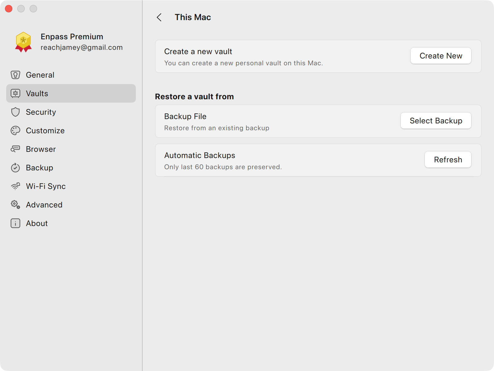
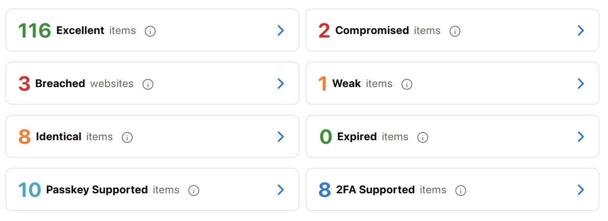

Enpass 为什么把密码库做成一个文件——从架构源头看它的安全与代价
Enpass 的 Vault 是一个加密数据库文件而非云端服务，这个设计选择让它获得了离线优先、跨云自由的优势，也带来了同步冲突、Passkey 不可导出等固有代价。
一个文件，装着你所有的数字身份
我第一次注意到 Enpass 的架构差异，是在排查一次云同步冲突的时候——两台设备几乎同时改了同一条登录条目，云盘上出现了两份 Vault 副本，Enpass 不会自动合并，我得手动下载、逐个条目比对、再把缺失的内容补回去。这个过程让我意识到：Enpass 的整个设计哲学，建立在一个非常朴素的决定之上——你的密码库不是一个在线服务，而是一个你自己保管的加密文件。
这个决定看起来简单，但它像一把尺子，丈量着 Enpass 的每一个功能取舍：为什么 Passkey 不支持导出、为什么没有实时双向同步、为什么备份是你自己的事、为什么它可以完全离线工作。去 Enpass官网 翻一下产品介绍就能看到，它从第一天起就把"离线优先、自有数据"放在最显眼的位置——不是功能凑不齐，是有意的选择。理解了这一点，Enpass 的所有"特性"和"毛病"都能找到根由。
Vault 文件到底是什么
Enpass 的 Vault 本质上是一个加密的 SQLite 数据库文件——你在云盘上看到的那个 .db 文件不是某个云端的远程引用，它就是完整的数据本体。所有条目、密码历史、附件、Passkey、2FA 密钥，全部物理存在于这一份文件里。主密码用 Argon2id 派生密钥，每次解锁都是本地计算，不会把主密码上传到任何服务器。
这个架构和 1Password、Bitwarden 这类 SaaS 密码管理器有本质不同。后者的 Vault 存在它们自己的服务器上，客户端只是一个前端——同步是服务端实时推送的，冲突由服务端的版本控制自动解决。而 Enpass 的同步是纯文件级同步：设备 A 改完 Vault → 文件更新 → 云盘上传新版本 → 设备 B 看到变更 → 下载。没有中间协调者，没有状态协商，只有"谁最后上传谁生效"的朴素竞争。从 官方下载 安装包后就能体会到这种不同——整个安装过程不需要注册账号，打开直接创建 Vault 文件。

为什么 Passkey 不能导出——设备级密钥的物理边界
样本里提到一个容易让人困惑的细节：Enpass 支持 Passkey 登录，但 Passkey 不出现在 JSON / CSV 导出里。官方文档把这归结为"Passkey 不支持跨工具导出"的行业通用做法——但如果把 Enpass 的文件架构考虑进来，原因就更清晰了。
Passkey 的私钥存储在设备的安全硬件里（iOS 的 Secure Enclave、Android 的 Keystore、Windows 的 TPM），不经过 Enpass 的 Vault 加密层。Enpass 只是持有一份"引用"——告诉系统"这个 Passkey 属于哪个登录条目"，但真正的密钥材料它拿不到、也不该拿到。导出 Vault 文件就是导出 Enpass 能控制的一切，但设备硬件里的密钥从物理上就不在 Vault 的边界内。
这是 Enpass 文件架构的一个关键隐喻：Vault 加密了它能加密的一切，但设备硬件安全是另一个层级的保护。Passkey 的安全恰恰来自这种分层——即使 Vault 文件被偷了，攻击者也拿不到硬件里的私钥；反过来，就算设备丢了，只要你在网站端撤销了 Passkey，攻击者手上的硬件密钥也作废。
同步冲突——无协调者架构的必然代价
云同步冲突是 Enpass 文件架构最直接的副作用。两台设备各自读取了同一个旧版本的 Vault、各自修改、各自上传，云盘面对两个"最新版本"只能保留两份——Google Drive 叫 conflict-copy，Dropbox 叫 (1)，OneDrive 直接弹窗让你选。Enpass 不会自动合并，它只会默认打开最后上传的那个版本，把另一个留在云盘上"遗忘"。
样本里给出的冲突恢复步骤很实在，正如 Enpass文档 里详细拆解的那样：暂停所有设备的同步 → 下载两个版本 → 分别用 Enpass 恢复到临时 Vault → 逐个条目对比 → 手动合并 → 清理冲突文件。这个过程繁琐但安全——它不会悄悄丢数据，只是把选择权交还给你。
为什么不做自动合并？因为 Enpass 处理的是密码、2FA 密钥、Passkey 这类不可错配的敏感字段。自动合并如果搞混了"设备 A 改了密码、设备 B 改了用户名"这种交叉修改，后果远比手动合并严重。这个选择让我想起 Git 的 merge 和 rebase——版本控制系统尚且会在冲突时停手等你决定，密码库更不能自作主张。

导出为什么是明文——信任边界的清晰声明
Enpass 支持导出为 JSON、CSV、TXT 三种格式，全部明文。这个设计让很多人第一次看到时会皱眉头——一个密码管理器为什么要输出明文密码？但仔细想，导出的用途是迁移、审计、打印——这些场景下你确实需要看到明文。加密导出会让导出失去意义（你得先解密才能用，而你解密用的主密码本身就在 Vault 里，等于把钥匙和锁放在一起）。
对比 Enpass 的原生备份（.enpassbackup 文件）就是加密的——它是 Vault 的完整副本，包含密码历史、附件，用主密码保护。导出和备份的区别，本质上是两个不同的信任边界声明：备份是"我信任这个文件的加密层"，导出是"我要把数据交给我自己的眼睛或另一个工具处理"。
样本里有句话值得记牢：不要用导出替代备份。导出是迁移工具，备份是安全底线。
审计面板——在文件架构上搭起的主动防御
Enpass 有个功能让我印象深刻：审计面板能扫描你的条目对应的网站，告诉你哪些网站已经支持 Passkey 或 2FA、而你还没启用。这个功能的实现方式，恰恰又回到了它的文件架构上——Enpass 内置了一个网站数据库，记录了哪些域名支持哪些认证方式，然后遍历你的 Vault 条目，逐个匹配 URL。
它不需要云端协作、不需要服务端推送、不需要你的 Vault 上传到任何地方——整个扫描过程在本地 Vault 文件上完成，用的是内置的静态数据库。这就是文件架构的优势：所有计算都可以离线完成。审计面板给你列出"可升级到 Passkey"的条目，你一个一个点进去、跳转到对应网站的安全设置页面、创建 Passkey、Enpass 自动把 Passkey 引用加回条目——整个流程不依赖任何中间服务。

这套架构适合谁，不适合谁
说了这么多，Enpass 文件架构的画像已经清晰了。
适合的场景：你想完全掌控自己的数据——不要某个公司的服务器保管你的密码、不要按月订阅、需要在多台设备间自由同步（Google Drive / Dropbox / OneDrive / iCloud 任选）、偶尔完全离线工作、愿意为了这种自由接受手动处理冲突和备份的成本。开发者、安全敏感人士、讨厌被 SaaS 绑定的用户，是 Enpass 最自然的受众。
不适合的场景：你想要零心智负担——不想管备份、不想处理同步冲突、希望一切自动发生。如果你只在两台设备上用、从不并发修改 Vault、但又希望永远不用手动清理冲突文件，那 SaaS 方案确实更省心。同样地，Passkey 是设备级的——你换了新手机就得在每个支持 Passkey 的网站上重新创建，没有一键迁移，这也是文件架构的固有边界。
最后说一句：我见过很多密码管理器的宣传文案都在打"安全"牌，但 Enpass 的安全是一种更"朴素"的安全——它不宣称自己有什么云端加密魔法，只是把一个加密文件交给你，让你自己决定放在哪里、怎么备份、要不要同步。这种设计不花哨，但它让我第一次真正理解了"离线优先"这四个字在密码管理器里意味着什么——不是功能凑不齐，而是从架构根基上，它假设没有网络也要能工作。
这套资料在三个仓库都有维护——GitHub 是主仓，Gitee 和 GitCode 分别提供了国内访问镜像和定期备份，方便不同环境下的查阅和同步。